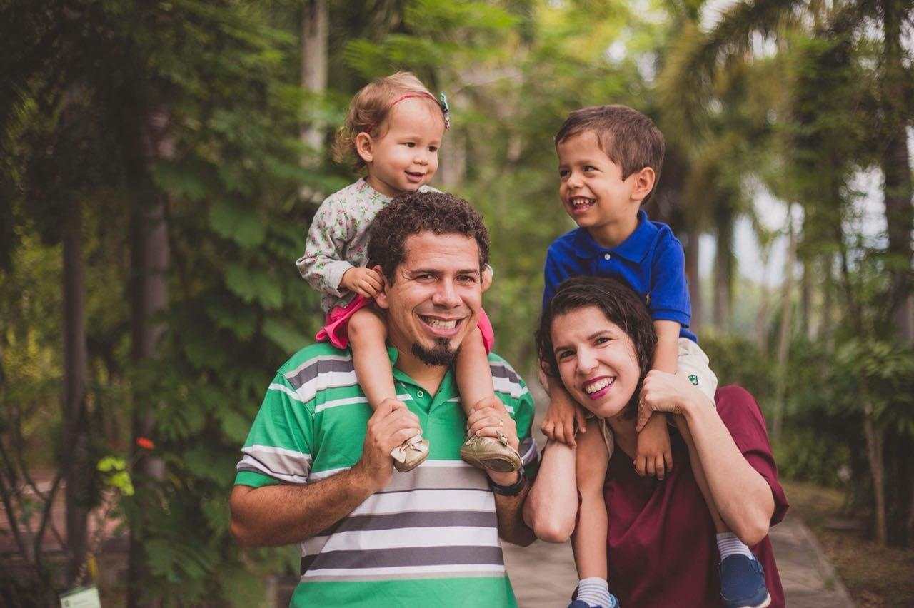
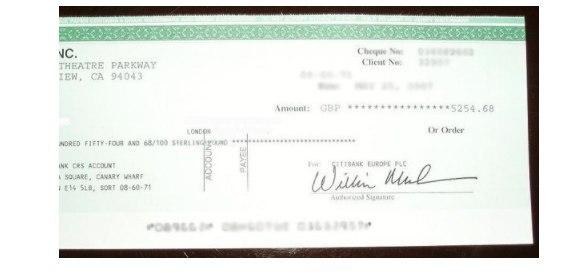

O Governo do Brasil está AGITADO devido à descoberta do NOVO Sistema Bancário Secreto (Saia do emprego em 30 dias!)
Os Brasileiros Estão Usando Isso para Ganhar em média R$ 450/dia e Sair de Seus Empregos!
Agora você pode se unir a um novo sistema bancário secreto que está ganhando popularidade aqui no Brasil. E o que é incrível é a rapidez com que um pequeno depósito nesta conta pode se transformar em uma fortuna, mesmo no mundo de juros de hoje de "não paga nada".
Por exemplo, um jovem chamado Fabiano Andrade acaba de fazer um novo depósito de R$ 250 em seu novo tipo de conta. Ele disse o seguinte aos repórteres sobre sua incrível descoberta:
"Eu ficava on-line todas as manhãs... e via que a conta crescia!”
Fabiano ficou completamente impressionado com sua sorte. Apenas quatro meses de crescimento e praticamente nenhum esforço de sua parte rendeu-lhe mais de R$ 886.000,00. Tudo graças a seu depósito inicial de menos de R$ 300.
Você ficaria surpreso em saber que... Ele não colocou seu dinheiro em nenhum banco offshore ou em moeda estrangeira de risco. E ele não comprou ações ou qualquer outra coisa que os bancos tentaram nos vender no passado. Na verdade, em nossos 20 anos de experiência em relatórios financeiros, nunca tínhamos visto nada parecido com o que Fabiano fez com seu dinheiro.
Imediatamente após ler suas experiências, nosso CEO formou uma equipe de 15 jornalistas financeiros de renome para liderar uma investigação completa sobre esse novo tipo de conta.
O resultado de nossa investigação nos chocou. E nosso palpite é que os resultados também irão chocá-lo.
"Mais de 500.000 cidadãos do Brasil abriram contas em quase todas as cidades do país. Agora, essas pessoas estão vendo ganhos absolutamente enormes em suas contas. Outro jovem, Rafael Sanches, que acabou de pôr R$ 1.000 em sua conta, viu o valor crescer em quase R$ 5 milhões. Ou Anderson Fernandes, cujo depósito inicial se transformou em uma pequena fortuna, que ele usou para comprar um maravilhoso castelo de 15 quartos no Rio. Os especialistas concordam que, simplesmente transferindo um pouco de dinheiro para essas contas 100% gratuitas, confiáveis, seguras e totalmente privadas é possível ganhar pelo menos 50 vezes o valor que uma conta de poupança, ações ou qualquer outra coisa pagaria."
Como saber se essa conta "secreta" é ideal para você? Bem, no início você não sabe, mas se tiver pelo menos R$ 250 - R$ 1000 em sua poupança, você tem um compromisso moral com sua família, para seu próprio bem-estar e o de suas futuras gerações, de pelo menos dar uma olhada em uma dessas contas.
Como Aumentar Sua Riqueza no Século 21
A primeira vez que esse novo tipo de conta bancária foi aberto em 2009, logo após a crise de crédito, a imobiliária e a bancária. Não é nenhum segredo que as pessoas em todas as partes do mundo estavam com medo do que poderia acontecer com o sistema financeiro. Foi quando esse sistema bancário secreto começou a ficar popular.
E, ao contrário do sistema bancário tradicional, esse sistema não está vinculado a um governo específico. Não está vinculado a uma moeda específica e tampouco a nenhum banco específico. Então, basicamente, é absolutamente à prova de crises.
E o que é realmente chocante... Essas contas fazem com que pessoas comuns em todo o mundo fiquem extremamente ricas. Seja você um estagiário, professor, gerente ou até mesmo desempregado, um pequeno depósito de apenas R$ 500 no início deste mês teria aumentado em mais de R$ 22.500,00 hoje.
Nossas evidências mostram que essa nova conta bancária secreta poderia criar mais milionários no ano que vem do que o Google criou no dia em que se tornou público. Pense nisso: em 2013, apenas aproximadamente 100.000 pessoas possuíam uma dessas contas. Hoje, mais de 14 milhões estão aproveitando esse novo sistema bancário secreto.
A quantidade de dinheiro que entra no sistema está aumentando a cada dia. Na verdade, há mais de um ano, aproximadamente R$ 100 milhões estavam parados nesse sistema secreto. Hoje, são R$ 30 bilhões, e os especialistas afirmam que o mercado se expandirá para os trilhões nos próximos anos.
Nossa pesquisa descobriu que até mesmo alguns banqueiros da elite de Londres estão silenciosamente “descartando” o sistema bancário tradicional e agora estão colocando seu próprio dinheiro - grande parte de seu dinheiro pessoal - no fundo desse sistema bancário secreto.
Como essa conta não tem nada a ver com ouro, prata, ações, títulos, opções ou qualquer outra coisa de que você provavelmente já tenha ouvido falar... você não terá que aprender sobre investimentos complicados. Basta visitar um site, (detalhes fornecidos na parte inferior deste relatório especial) preencher seus dados, abrir uma conta e fazer um depósito de qualquer quantidade. Em seguida, sente-se e relaxe ao ver R$ 250 crescer para R$ 500, R$ 1000, R$ 5000 ou até mais.
Uma riqueza que muda a vida de pessoas comuns que a criaram ao apostar nessa nova e revolucionária "conta bancária" é muito real. Embora você não ouça sobre isso na TV ou no telejornal, muitos dos ricos e poderosos já estão transferindo dinheiro para suas novas contas.
A possibilidade de saltar tão cedo durante uma grande mudança de paradigma provavelmente nunca acontecerá novamente.
O que é ainda mais fascinante sobre essas contas é como os banqueiros ricos estão usando-as não apenas para fazer crescer seu próprio dinheiro, mas também para escondê-lo; todas as transações serão 100% anônimas e, portanto, esse sistema oferece privacidade total. E o melhor de tudo é que o governo do Brasil não pode acessar sua conta, mesmo em tempos de crise financeira.
Por que isso é essencial?
Todo mundo sabe que a dívida nacional dobrou nos últimos 10 anos, e com BREXIT, Trump e o fracasso em consertar o sistema financeiro internacional após o último colapso, é apenas uma questão de tempo até que surja a próxima crise financeira. E, dessa vez, o governo não terá os recursos para resgatar seus bancos, seja o Banco do Brasil, o HSBC, o Santander ou o Citibank.
Hoje, 29 de outubro de 2017, é legal abrir uma conta em um "banco secreto". A melhor parte é que você não precisa ter muito dinheiro para esse tipo de banco. Você pode simplesmente começar transferindo uma pequena quantidade, como R$ 250, para essa conta bancária on-line 100% segura e sem riscos e nivelar os lucros com um clique do mouse.
NÃO HÁ UM VALOR MÁXIMO. Indivíduos com alto patrimônio líquido podem depositar R$ 5 milhões, R$ 10 milhões ou até R$ 100 milhões. E todos eles podem ver o valor dessa conta crescer pelo menos SEIS VEZES em algumas semanas!
O Sistema Bancário... E a Moeda do Futuro.
É algo chamado "criptomoeda". Não, não é um centavo. É simplesmente o nome de uma moeda digital como o Bitcoin (BTC) ou o Ethereum (ETH). Moedas de que só você tem controle... e você pode decidir se deseja mantê-las ou retirá-las. O governo não pode confiscá-las. E o valor cresceu de forma assustadora, criando vários milionários diariamente.
Por exemplo, o valor do Bitcoin se multiplicou 879.999 vezes. Um depósito de apenas R$ 1.200,00 valeria pelo menos R$ 1 bilhão hoje. E se você tivesse investido em outra moeda digital como o Ethereum, teria obtido retornos de até 4.500% só na semana passada!
Se tivesse comprado Bitcoins no início deste ano, com um pequeno depósito de apenas R$ 3.532,00, você poderia ter comprado uma mansão de R$ 3 milhões. Um novo Bentley 2017 teria lhe custado R$ 986. E um Rolex top de linha, que normalmente custa aproximadamente R$ 50.000, teria custado apenas R$ 350.
E a criptomoeda teve um enorme desenvolvimento na aceitação geral. Os caixas eletrônicos estão sendo removidos todas as semanas. Milhares de empresas já estão aceitando moedas digitais. O governo foi forçado a reconhecer que isso foi revelado. E até mesmo os bancos sabem que isto é o futuro.
E o que o faz dar certo é que é incrivelmente fácil de começar.
Qualquer um pode aprender a dominar isso em poucos segundos. Você não precisa ter nenhuma experiência prévia em investimento ou em negócios. Não precisa possuir nenhum tipo de formação e nem ser graduado. Também não precisa ser bom em matemática. Não envolve nenhum trabalho difícil e não há nada para vender. Você não terá que abrir mão do controle ou seguir diretrizes difíceis. Não há necessidade de suposições ou "sorte". Após começar, leva apenas algumas horas por semana para manter e assistir sua conta crescer. E você pode fazer tudo em casa ou onde quiser, enquanto estiver fazendo as tarefas diárias!
Claro, você pode estar cético de que algo tão simples possa ser tão lucrativo e tão ameaçador para o sistema bancário tradicional. É por isso que decidimos colocar esse sistema à prova, e até mesmo os céticos ficaram completamente pasmos...
Colocando o Sistema em Teste
Não foi difícil encontrar um voluntário. Nossa caixa de entrada ficou inundada de pedidos, e finalmente escolhemos a sortuda Bruna Fagundes. Ela tem 44 anos e mora no Rio com o marido e dois filhos. Enfermeira a tempo parcial, ela sempre foi capaz de pagar as contas, mas nunca pode levar sua família para umas merecidas férias. E sem possuir nenhuma habilidade em informática, graduação ou conhecimento sobre como funcionam os mercados financeiros, ela seria nossa melhor escolha para o teste.
"A primeira coisa que eu fiz foi criar uma conta gratuita na página Cryptocurrency System. Demorou apenas 2 minutos para inserir meu nome, e-mail, número de telefone e senha. Para ativar o sistema, transferi R$ 150 para a minha nova carteira on-line. Como é apenas uma transferência de saldo, não me custou nada. Eu sabia que poderia transferir o meu dinheiro de volta a qualquer momento."
“No dia seguinte, entrei no site. Fiquei um pouco nervosa... Abri o painel e pensei que tivesse cometido algum erro; essa conta era minha? Eu verifiquei novamente o nome da conta no canto da tela, sim, era minha. Pude ver que meu novo saldo naquela época era de R$ 1.224,53. Inacreditável! Em apenas 12 horas, enquanto eu dormia, a conta lucrou R$ 1.076,47 com os R$ 150 que eu transferi.”
“Escrevi para o mentor pessoal da minha conta. Por incrível que pareça, ele não ficou tão surpreso quanto eu. “Isso é normal”, disse ele, “na verdade, muitas vezes vemos pessoas ganhando mais do que isso nas primeiras 12 horas”. Fiquei impressionado, essa coisa realmente estava funcionando.”
“No terceiro dia, após a criação da minha nova conta, eu já estava sabendo usá-lo. Foi tão fácil e não só isso, estava muito claro como eu estava ganhando tanto dinheiro. Antes de dormir naquela noite, minha carteira me mostrou a surpreendente quantia de R$ 5.254,68.”
"Quanto mais dinheiro eu ganhar, mais eu poderia potencialmente ganhar, foi o que o meu mentor me explicou. Eu comprei mais algumas moedas digitais e, em apenas 4 dias, ganhei o suficiente para viajar o mundo com a minha família em primeira classe! Eles ainda nem sabiam do meu sucesso. Reservei um quarto em um hotel 5 estrelas para o fim de semana para lhes contar sobre essa história incrível. Decidi que pagaria nossas dívidas para que pudéssemos perseguir mais os nossos sonhos de vida no futuro. Este dinheiro vai mudar nossas vidas.”
Por que é CRUCIAL que Você Abra Sua Conta Agora
Você simplesmente não pode perder este trem. O nível de aceitação da criptomoeda está a ponto de explodir. À medida que cresce, continuará tornando seus usuários extremamente ricos. Transformando cada R$ 1 em R$ 10, R$ 100 ou até mais... em poucas semanas. E praticamente não há nada a perder, pois a plataforma oferece um reembolso total do seu depósito inicial.
Como Você Pode Aproveitar Essa Oportunidade Única No Século?
Devido à demanda extremamente alta, há apenas 100 vagas. Os candidatos serão aceitos por ordem de chegada.
O governo e as grandes corporações já estão atentos e tentando fazer tudo o que está ao seu alcance para derrubar esse sistema e excluir seu acesso da internet para sempre.
Clique neste link para ver se você ainda pode participar!
Desde que você não veja um erro na próxima página, você ainda tem uma chance.
Clique neste link para ver se você ainda pode participar!
*Preencha todos os dados com as informações corretas para evitar decepções.
RESULTADOS DE LEITORES
LUCRO: R$14.851

"Estive usando a Bitcoin Rio por 2 semanas, eu já consegui transformar meu depósito inicial de R$850 para R$14.851. That is far more than I make at work."
Stefano Silvestre
São Paulo SP
LUCRO: R$24.553

"Já atingi mais de R$20.000 de lucro usando a Bitcoin Rio. Porque eu consigo usar em meu laptop, eu estive viajando pelo Brasil e ganhando dinheiro todo esse tempo!”
Bruno Castro
Fortaleza CE
LUCRO: R$59.634

"É muito fácil de se usar, até mesmo para mim! Eu nunca tradei antes, mas estou fazendo R$15.000 por semana e adorando!"
Cintia Monteiro
Rio de Janeiro RJ
LUCRO: R$112.197

"Eu finalmente consegue sair do meu trabalho, graças à Bitcoin Rio. Eu fiz tanto dinheiro, é muito fácil!"
Caio Gomes
Atibaia SP
LUCRO: BRL 20,151

"Eu apenas usei a Bitcoin Rio por 2 semanas e já paguei minha viagem para a Europa."
Marcela Cassanti
Petrópolis SP
LUCRO: R$157.136

"Eu me juntei com meus melho„ Bitcoin Rio uporabljam šele 2 tedna in že si lahko privoščim izlet po Evropi!“res amigos e juntos atingimos o jackpot depois de apenas 3 semanas. O robô de trading faz todo o trabalho para você. Junto fizemos mais de R$33.000 por semana.”
Henrique Pascoale
Manaus AM
LUCRO: R$32.872

"Meu namorado me contou sobre a Bitcoin Rio e ela mudou minha vida. Estive fazendo R$6.000 por semana por mais de um mês, com menos de 30 minutos por dia de trabalho por dia.”
Lúcia Ferrante
Cascavel PR
Siga os 3 Simples Passos para Começar:

Passo 1:
Passo 2:

Adicone um comentário
Carla Guedes
Eu vi isso no telejornal. Que loucura eles estarem dando essa oportunidade para as pessoas!?!?! Estou me inscrevendo agora. meu palpite é que essas vagas serão preenchidas muito rápido!
Responder. 13 . Gostar. 12 minutos atrás
Jennifer Salgado
O momento não poderia ser melhor, meu marido e eu também estamos com muitas dificuldades e isso poderia ser a nossa resposta.
Responder. 6 . Gostar. 13 minutos atrás
Miriam Gonçalves
Alguém já experimentou isso? Parece promissor.
Responder. 19 . Gostar . 25 minutos atrás
Rayan Martinez
Hui, eu era um testador beta e ainda estou usando agora. Está funcionando muito bem, na verdade! Paguei 5 dólares pelo envio e processamento, recebi em poucos dias, me inscrevi e venho trabalhando desde então. Na primeira semana, ganhei a impressionante quantidade de R$ 288 e, na segunda, dobrei, então, meio que voltou a R$ 500 por semana! Vou deixar este cachorrinho crescer o máximo que puder. Aqui está uma captura de tela das minhas estatísticas, meu marido está em choque.
Responder. Gostar . 46 minutos atrás
Ricardo Jaccieri
Obrigado pela informação, comecei faz 12 semanas no programa experimental como o Alex. Recebi 12 cheques com um total de R$ 8.400, muito legal.
Responder. 43 . Gostar . 1 hora atrás
Rebeca Reis
Tentei uma coisa na internet e não deu certo. Ganhei aproximadamente R$ $ 500 por mês, mas foi há 2 anos.
Responder. 3 . Gostar . 1 hora atrás
Sabrina Martel
Apenas um aviso rápido sobre isso. Funciona, mas você precisa saber usar a Internet pelo menos um pouco. Se você puder usar e-mail, etc., dará certo.
Responder. 51. Gostar . 2 horas atrás
Ricardo Campos
Acabei de receber o meu primeiro cheque de R$ 2.851,79! Que legal receber meu primeiro cheque depois de aproximadamente 2 semanas.
Responder. 12 . Gostar . 2 horas atrás
Isabel Santiago
este artigo é muito legal. Há anos que trabalho em casa, posso usar usar esse programa sem problema!
Responder. 30 . Gostar . 2 horas atrás
Maria do Carmo
Eu não sei. Ainda estou meio preocupado com tudo isso. Eu nunca trabalhei de casa
Responder. 53 . Gostar . 2 horas atrás
Carla Pereira
Alguém sabe se é necessário ter algum programa ou um determinado computador para fque funcione?
Responder. 16 . Gostar . 2 horas atrás
João Cardoso
Oi, Danila, a resposta é Não. Vai funcionar em qualquer computador que você tiver. Atualmente uso esse sistema em um laptop antigo e funciona super bem. Você só precisa do kit que o autor citou no artigo.
Responder. 2 . Gostar . 2 horas atrás
Tiago Moraes
Caramba, Sônia! Obrigado por postar aquela captura de tela, você acabou de me dar a inspiração que eu precisava. Uau! :-)
Responder. 11 . Gostar . 2 horas atrás
Carla Perez
Espero que funcione pois eu realmente odeio meu chefe!!!!!
Responder. 33 . Gostar . 2 horas atrás
Amanda Coelho
vi e vou tentar amanhã
Responder. 23 . Gostar . 2 horas atrás
Bruno Silva
Eu me pergunto até que ponto isso vai funcionar se eu fizer isso apenas algumas horas durante a noite? Ainda tenho meu trabalho diurno (que adoraria largar, rs), mas agora só tenho tempo para algumas horas por noite. Eu responderei de volta pra contar pra vocês!
Responder. 6 . Gostar . 3 horas atrás
Francisco Nogueira
Isso é incrível! Gostaria de ter conhecido isso há 5 anos atrás.
Responder. 2 . Gostar . 3 horas atrás
Luis Felipe
Eu gostaria apenas de adicionar minha história; acho que outras pessoas gostariam de ouvir. Eu também estava sempre desconfiado das ofertas de trabalho em casa pois sempre pareciam ser golpes. Mas depois que a recessão, fiquei um pouco assustado. Eu queria ter um plano B, caso precisasse. Então, segui seu conselho e ganhei meu kit grátis. Funcionou super bem - eu estava ganhando dinheiro imediatamente! Acabei sendo demitido, exatamente como temia, mas como estava usando o kit on-line, tinha dinheiro para me apoiar. Agora estou melhor do que estava no meu trabalho!
Responder. 17 . Gostar . 4 horas atrás
# social plugin
© 2020 Copyright. Todos os direitos reservados.